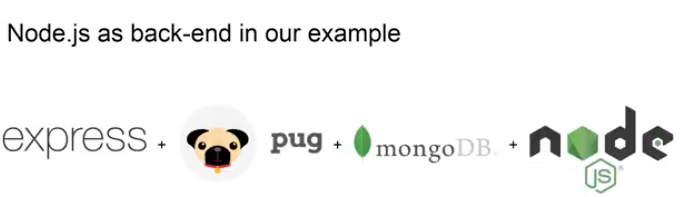

We are going to talk about an example application. What we used for this example application are these four components.
Specifically for our application, we use express.js to be able to interpret the incoming requests and produce meaningful answers. We use Pug for the views, but actually, we have prepared two examples, one with Pug and one without Pug. In the first example, we won't use Pug, because it's simply an API. So, it only uses the other three components, which are express, MongoDB and Node. We use MongoDB to store our information and to be able to retrieve it in a later stage. We use Node as the base of our application, as it allows us to interpret our JavaScript and present everything that we have discussed so far.
So, let's actually look at our examples.
They are two, as already said: the first example is only an API example. So, it does not have views. At the first glance, you might immediately see that example is very easy, both in terms of code complexity as well as in terms of the example of the view itself, so, what you see on your browser. When we developed our example, we used a very common pattern which is called the Model-View-Controllers pattern.
What this pattern tells us to do is to divide our application into different parts: first, the models, which are representation of the data, which we use in our application. So, if for example, we are going to develop an application that deals with a blog, we would have different models for the user, which is writing the blog post, the post itself, the comments on the blog post and so on. The views, on the other hand, are the representation of these data objects. So, there would be a view for the blog, there would be a view for the post, a view for the comment, there would be view for your own user. The controllers is what bring these two things together. They combine data and they combine the views and calculations to produce some meaningful output. Specifically, if, for example, we want to view a blog post, we want to see in the same location both the information about the user, the information about some previous posts and information about the comments.
So, here is the folder structure of a first example application, which is the API example. We have the first folder, which is the app folder where we have our controllers, our models and our views. These are also folders, but the views folder is empty, because we don't have any views in an API. On the other hand, in the controller and in the models, we find two files, which are about the relationships between Game of Thrones characters in one specific book of Game of Thrones. Also, we see on the root of our example application, some other files, which allow us for example to connect to the database, which, in this case, is the database.js file. The router.js, which takes care of knowing which requests are incoming and how to answer them. The package.json, which we have already discussed in a previous video and I urge you to look at this video if you don't know what we are talking about. And, the index.js, which is the starting point of our application.
The folder structure for the complete example is a little bit larger. Here you can actually see that there are more files, but most of these files are either executed in the browser or just there to give views, which are things that you actually see in the application. As you see in this folder structure, we have four views, which are: the base, the home, the navigation and the visualization .pug. Views, as already said in previous videos, are modular components. So, for example, the navigation.pug is going to be used in the base as well as in a home and a visualization.pug. The public folder, which is a new folder which you find in our folder structure, is going to be exported to people connecting to our application as is, which means all of the files that are in this folder are going to be accessed by people connecting to our application. That specifically means that if you are, for example, connecting to example.dallago.us/public/libs/d3.js, you will actually access the content of this file on our server. You can also do that on your own computer and if you just put some files into this public folder, they will be exported to your application and you can view them. In this folder, we only have JavaScript, which is executed in the front-end. So, this is a very important distinction. This is not going to be executed on your machine, but only in the browser of the machines connecting to your application. Here we also find the style sheets, or cascading style sheets, which are in orange in our representation.
Now, another important part is how do you get these applications to run on your computer. Well, first of all, you need to download the zip files, which we presented in a previous slide and you have to unzip them on your computer. Later, you have to make sure that you have installed Node.js and NPM. When your install Node.js, you automatically install NPM as well. So, don't worry, it's not two separate things. You can install Node.js by following the link on the slide, which is nodejs.org. You then have to use the command line to navigate to the folder where the applications are and you will know when you are in this folder if you can open the index.js file, which is the entry point of our application. To run the application, we actually need our dependencies, which are described in the package.json, as already discussed in previous videos. To install these dependencies, you would need to run npm install, which will create a new folder in the root of your application or in the root of the application, and this folder will contain all of this system elements that Node needs to run your application or our application. To actually run the application then you will need to run node index.js, which will output some some lines to your console, saying that it was successfully in connecting to the database and that now you can navigate to your application. To later view the application, which is being serviced from your own computer, you will have to connect to the link, which is on the last line of this slide. What localhost means is that you are connecting to your own computer. 3000 is the port on which your application is running and /api/relationships is the API endpoint in which we will expose data about the relationships between the different characters in the Game of Thrones. So, we are pretty sure that API and relationships, the endpoint api/relationships, will work on both the complete applications and the example of the application.